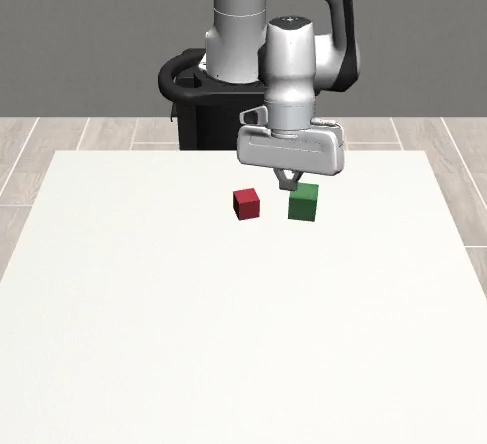
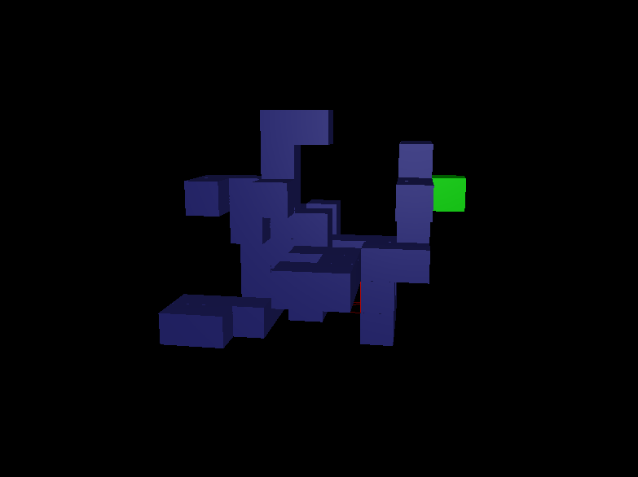
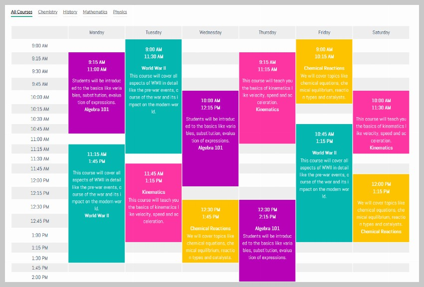
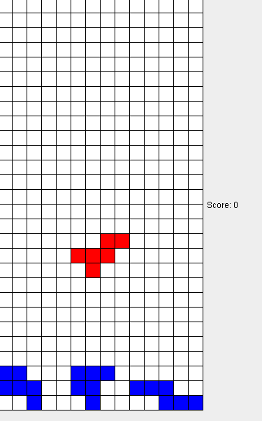
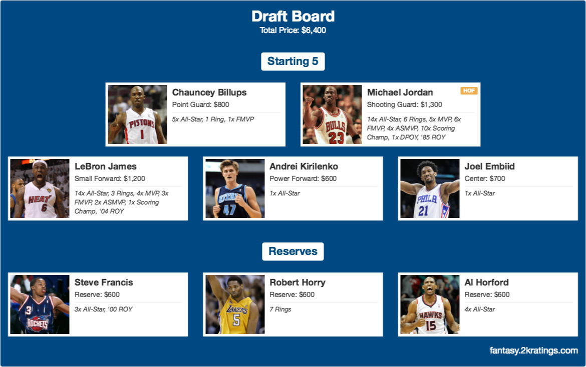
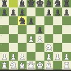
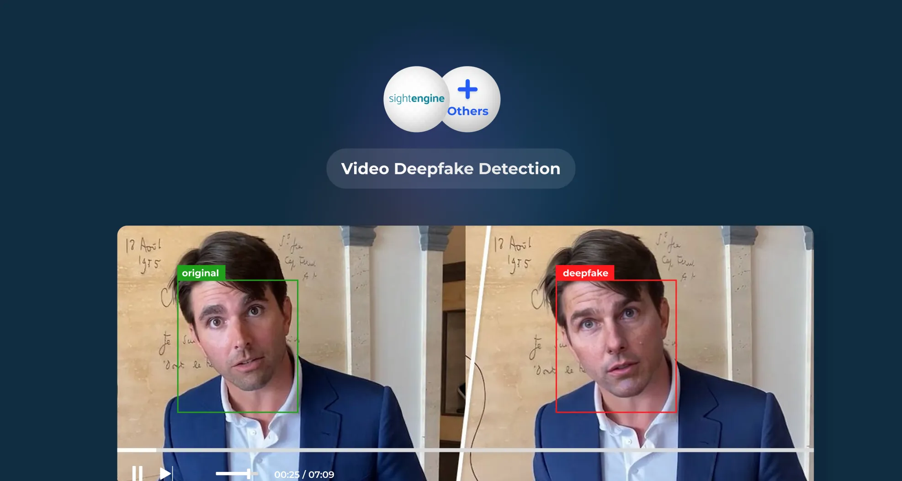
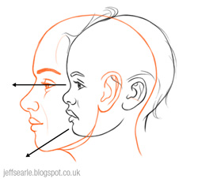
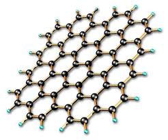

I specialize in studying and improving the design of advanced AI systems,
from generative models to robotic learning algorithms.
By analyzing architectures in depth and refining their performance,
I aim to push the boundaries of what intelligent systems can achieve.








